Variente Generale al P.R.G. - Zonizzazione e vincoli sul territorio adeguati ai D.Dir. 558 e 124\DRU\02 |
||
| 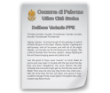 | Deliberazione n. 7/2004 - Presa d'atto | |
| Relazione Genarale | ||
| Relazione Gen.le di adeguamento | ||
| Norme Techiche di attuazzione | ||
| Regolamento Edilizio | ||
| 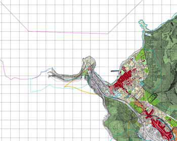 | Tavola 5001 | |
| 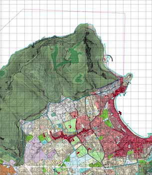 | Tavola 5002 | |
| 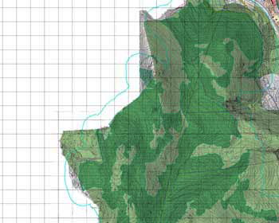 | Tavola 5003 | |
| 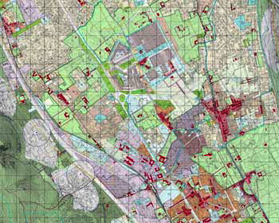 | ||
| 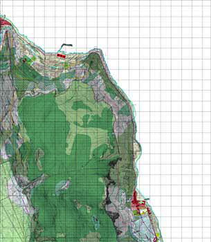 | Tavola 5005 | |
| 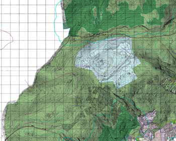 | Tavola 5006 | |
 |
Tavola 5007 | |
 |
Tavola 5008 | |
| 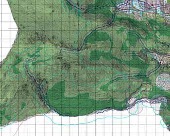 | Tavola 5009 | |
| 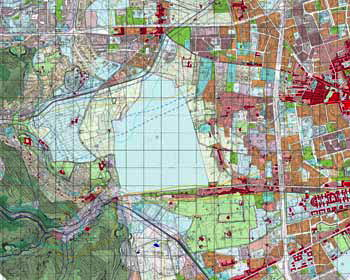 | Tavola 5010 | |
| 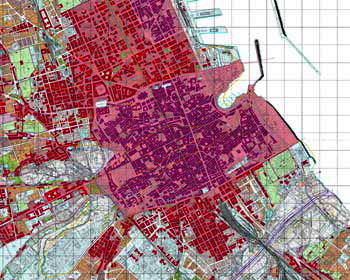 | Tavola 5011 | |
| 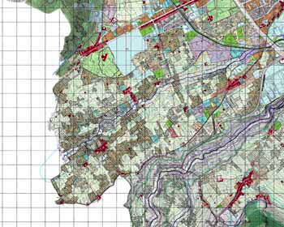 | Tavola 5012 | |
| 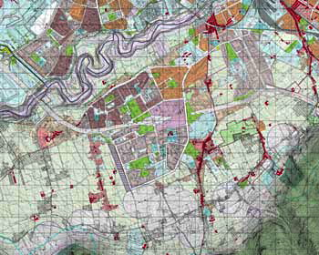 | Tavola 5013 | |
 |
Tavola 5014 | |
| 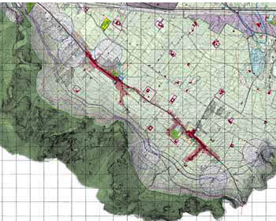 | Tavola 5015 | |
| 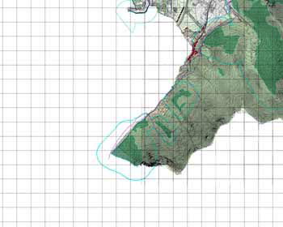 | Tavola 5016 | |
| 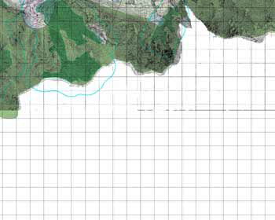 | Tavola 5017 | |
| 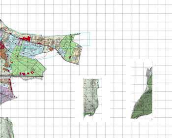 | Tavola 5018 | |
| Elenco completo Strumenti urbanistici generali | ||